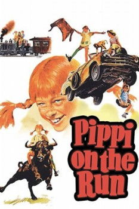

Also known as:På rymmen med Pippi Långstrump (original title)
Country:Sweden, 94 minutes
Spoken languages:Swedish
Genres:Family
Director(s):Olle Hellbom
Writer(s):Astrid Lindgren, Astrid Lindgren
Video Codec:Unknown
Number: 5722

Certification:G
Storyline:
Fed up with their strict parents, Tommy and Annika run away from home, with their friend Pippi Longstocking to look after them in their long trek.
Cast:
Inger Nilsson (as Pippi Långstrump), Maria Persson (as Annika Settergren), Pär Sundberg (as Tommy Settergren), Hans Alfredson (as Konrad), Öllegård Wellton (as Annika and Tommy's Mother)
Medium: Media file,
Location: D:\Pippi Longstocking Collection\Pippi on the Run.avi
Loaned: No
Aspect ratio: Unknown